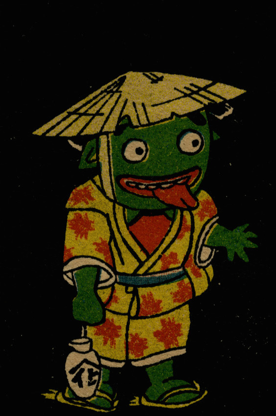

肌が緑色の化物。笠をかぶり、黄に紅葉柄の着物を着て、徳利を持っている。長い舌を出し左手を広げ前に出している。
出典：親書誌：U426_nichibunken_0280：[化物・猿飛佐助]；バケモノ サルトビ サスケ／日付：2014／資源識別子：U426_nichibunken_0280_0001_0000
Copyright (c)2010- International Research Center for Japanese Studies, Kyoto, Japan. All rights reserved.